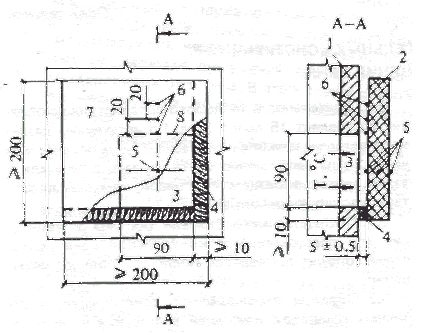
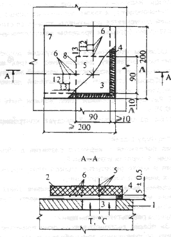
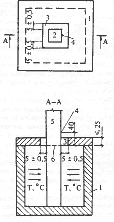
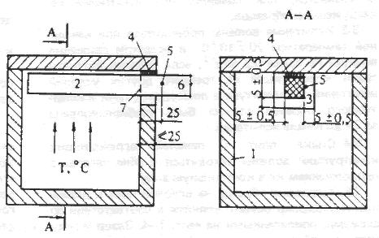

ПРИЛОЖЕНИЕ 1
Обязательное
МЕТОД ИСПЫТАНИЯ СТРОИТЕЛЬНЫХ КОНСТРУКЦИЙ
НА РАСПРОСТРАНЕНИЕ ОГНЯ
Настоящий метод устанавливает способ определения предела распространения огня по строительным конструкциям и их элементам1 при огневых испытаниях.
Предел распространения огня по конструкциям, выполненным полностью из негорючих материалов, следует принимать равным нулю без испытаний.
1. Сущность метода.
Испытание на распространение огня заключается в определении размера повреждения конструкции вследствие ее горения за пределами зоны нагрева — в контрольной зоне. Распространение огня по конструкциям определяется на основании испытаний образцов на специальных огневых печах.
2. Образцы для испытаний:
2.1. Образцы конструкций для испытаний должны быть выполнены в соответствии с рабочими чертежами и техническими условиями на их изготовление.
2.2. Образцы ограждающих конструкций должны иметь размеры не менее 2х2 м. Длина образцов стержневых конструкций должна обеспечивать возможность их крепления в соответствии со схемами, приведенными на черт. 3 и 4.
2.3. Влажность материалов образца должна быть динамически уравновешенной с влажностью окружающей среды при относительной влажности 60 ± 15% и температуре 20 ± 10 °С.
2.4. Образцы, имеющие ребра и выступы, следует располагать на печи так, чтобы они не препятствовали распространению огня в контрольной зоне.
3. Проведение испытаний:
3.1. Испытания образцов конструкций на распространение огня проводятся при локальном воздействии огня по режиму, установленному СТ СЭВ 1000-78.
3.2. Распространение огня по несущим конструкциям (перекрытиям, покрытиям, колоннам и др.) определяется, как правило, при испытании ненагруженных образцов.
3.3. Испытания должны проводиться при начальной температуре
20 ± 10 °С и скорости движения воздуха не более 0,5 м/с-1, если условия эксплуатации конструкций не требуют других условий испытаний. Температура в помещении, печи и испытуемого образца должна быть стабилизирована за 2 ч до начала испытаний.
3.4. Стыки плит и панелей ограждающих конструкций должны находиться в зоне нагрева с продолжением их в контрольную зону.
3.5. Установка образца на огневой печи и размещение термопар осуществляются в соответствии со схемами, приведенными на черт. 1— 4. Зазор между нагреваемой поверхностью образца и наружной поверхностью печи должен быть 5 ± 0,5 см.
1
Далее по тексту - „конструкции".3.6. Длительность теплового воздействия на образец составляет 15 мин ± 30 с. По истечении указанного времени пламя в печи гасится, и не позднее чем через 2 мин необходимо снять образец с печи или в зазор между образцом и огневой камерой ввести теплоизолирующий экран.
3.7. Обследование состояния образца и измерение его повреждений в контрольной зоне вследствие горения проводятся после его полного остывания.
3.8. Образцы ограждающих конструкций, лестничных площадок и маршей в процессе их испытания необходимо подвергать огневому воздействию с одной стороны.
Наружные и внутренние стены (в том числе перегородки) с несимметричным сечением следует испытывать отдельно с каждой стороны.
Плиты и настилы покрытий и перекрытий, а также подвесные потолки следует испытывать при огневом воздействии снизу.
Лестничные площадки и марши следует испытывать в горизонтальном положении отдельно с каждой стороны при огневом воздействии снизу.
Образцы наружных и внутренних стен (в том числе перегородок), а также лестничных площадок и маршей допускается испытывать только со стороны с заведомо большим пределом распространения огня.
3.9. Образцы стержневых конструкций должны подвергаться огневому воздействию с трех или четырех сторон в зависимости от условий эксплуатации. Образцы ступеней для испытаний должны быть собраны в марши.
3.10. Размер контрольной зоны должен быть не менее 0,75 м.
3.11. Во время испытаний следует контролировать:
температуру в печи;
время появления и характер развития в образце трещин, отверстий и отслоений;
время и место раскрытия стыков плит, панелей и других элементов конструкций;
появление дыма и пламени, изменение цвета и состояния материалов и другие особенности поведения конструкций.
4. Оценка результатов испытаний:
4.1. За предел распространения огня принимается размер поврежденной зоны образца в плоскости конструкции от границы зоны нагрева перпендикулярно ей до наиболее удаленной точки повреждения (для вертикальных конструкций — вверх, для горизонтальных — в каждую сторону). Результаты измерения округляются до 1 см в большую сторону. Допускается принимать предел распространения огня по конструкциям равным нулю, если размер повреждения образца в контрольной зоне не превышает 5 см для вертикальных и 3 см для горизонтальных конструкций.

1. Схема установки на огневую печь образца вертикальной ограждающей конструкции1 - огневая печь; 2 - образец; 3 - проем огневой печи; 4 — уплотнение из минеральной ваты; 5, 6 — термопары (термопары 6 следует располагать на границе ближайшего к огневой печи слоя, выполненного из горючего или трудногорючего материала); 7 - контрольная зона; 8 - граница контрольной зоны

Черт. 2
.Схема установки на огневую печь ограждающей1— огневая печь; 2 —образец; 3—проем огневой печи; 4 - уплотнение из минеральной ваты; 5, 6 — термопары (термопары 6 следует располагать на границе ближайшего к огневой печи слоя, выполненного из горючего или трудногорючего материала); 7 - контрольная зона; 8 — граница контрольной зоны

огневую печьобразца вертикальной стержневой конструкции
1 — огневая печь; 2 — образец; 3 — проем огневой печи; 4 — термопара; 5 — контрольная зона; 6 — граница контрольной зоны

Черт. 4. Схема установки на огневую печь
образца горизонтальной стержневой конструкции1 — огневая печь; 2 — образец; 3 — проем огневой печи; 4 — уплотнение из минеральной ваты; 5 - термопара; 6 — контрольная зона; 7 — граница контрольной зоны
Для измерения размеров повреждения слоистых конструкций необходимо путем вскрытия обследовать все слои.
4.2. Повреждениями считаются обугливание и выгорание материалов, а также оплавление термопластичных материалов. При этом не учитывается повреждение слоев пароизоляции толщиной менее 2 мм.
4.3. При определении предела распространения огня следует учитывать результаты огневых испытаний двух одинаковых образцов конструкции. Предел распространения огня по конструкции определяется как среднее арифметическое результатов испытаний не менее чем двух образцов. При этом показатели наиболее высокого и наиболее низкого пределов распространения огня по двум испытанным образцам не должны отличаться более чем на 15% (от большего значения) . Если результаты отличаются более чем на 15%, то должны быть проведены дополнительные испытания. Если испытание проведено на одном образце, то для установления предела распространения огня по конструкции результат испытания необходимо умножить на 1,2.
5. Протокол испытаний должен содержать:
наименование организации, проводящей испытания;
наименование организации-заказчика;
наименование изделия с указанием технической документации на его изготовление;
дату испытаний;
наименование нормативного документа, в соответствии с которым проведено испытание;
чертежи и описание конструкции образцов;
данные о метеоусловиях при испытаниях;
для несимметричных внутренних стен и перегородок — указание стороны, подвергнутой огневому воздействию при испытании;
описание поведения образца при испытании, запись контролируемых параметров, включая показания термопар, и результатов их обработки;
результаты измерения границ повреждения образца в контрольной зоне вследствие его горения;
заключение с указанием предела распространения огня по конструкции;
фотоснимок конструкции в процессе и после испытания, а при необходимости — и после вскрытия внутренних слоев.